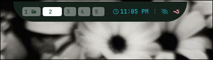
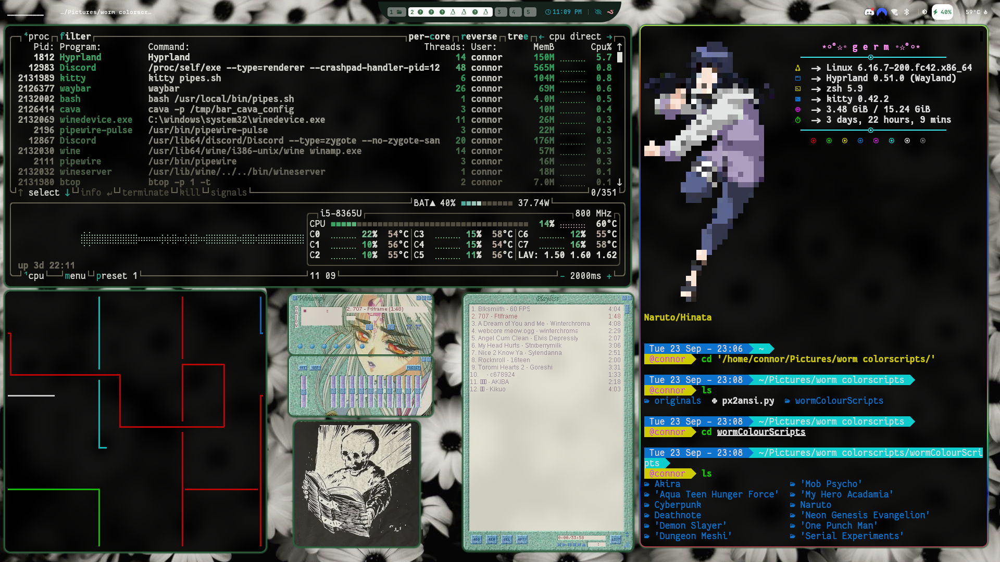

Hyprctl + custom waybar button

Here I made a little worm button to go right on my waybar that executes a bash script I wrote. The script uses hyprctl to control the hyprland compositor, basically just opens various files/scripts and un-tiles them, then moves them into various positions I set. It's kind of like a screen saver in a way. Opens up my winamp playlist, pipes.sh, a terminal, a random image, and btop for system monitoring.

Here it is in action
Not the most useful of scripts but it was fun to learn how you can control windows. hyprctl is pretty expansive so you could script all sorts of stuff into a button if you really wanted.
From changing your wallpaper to a random one from a folder, or completely changing all your configs to something else you like. Maybe like a light mode and a dark mode?
nothing I'm too interersted in making right now, but the point is you could do it if you were so motivated lol. linux is awesome